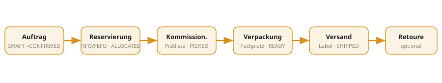

AntHive WMS – Projektdokumentation
Vollständige, eigenständige Dokumentation des AntHive Warehouse-Management-Systems.
Diese Seiten sind statisch (HTML/CSS/JS) und funktionieren ohne Verbindung zum Projekt – einfach
index.html im Browser öffnen.
TODO.md geführt.
Was ist AntHive?
AntHive ist ein API-first, mandantenfähiges Lagerverwaltungssystem für den gesamten Intralogistik-Ablauf: Wareneingang, Einlagerung, Bestandsführung (inkl. Charge/MHD/Seriennummer), Reservierung/Allokation, Kommissionierung (Einzel-, Batch-, Multi-Batch-, Multi-Tray-, Wave-/Zone-Picking), Verpackung, Versand, Retouren, Umlagerung/Nachschub, Inventur und Qualitätsprüfung. Ergänzend: KPI-Analytics, ABC/Slotting, 3PL-Abrechnung, Prozess-Tracking, Benachrichtigungen und Echtzeit-Updates.
Geräteklassen
Desktop-Verwaltung, Tablet-Packplatz und Handscanner (MDE) – jeweils passend zugeschnitten.
Kerneigenschaften
Revisionssicheres Audit-Log, transaktionale Outbox mit HMAC-Webhooks, RBAC, Idempotenz, Prometheus-Metriken.
Architektur

/metrics exponiert.Details im Bereich Entwicklerdokumentation.
Zielgruppen

| Bereich | Zielgruppe | Inhalt |
|---|---|---|
| Entwicklerdokumentation | Entwicklung/Integration | Architektur, Module, API, Datenmodell, Setup, Tests, Observability |
| Administration WMS | System-/Plattform-Admin | Deployment, Konfiguration, Rechte-Katalog, Bereiche/Tags, Strategien, Monitoring |
| Administration (Mandant) | Mandanten-Admin | Benutzer/Rollen, API-Keys, Artikel & Bilder, Lagerplätze, Tags, Abrechnung |
| Operative Anwender | Lagerpersonal | Wareneingang, Einlagerung, Kommissionierung, Umlagerung, Packen/Versand, Retouren, Q-Halt, Inventur |
Kernprozesse

Modulübersicht
| Modul | Zweck | Rechte (Beispiele) |
|---|---|---|
| Catalog | Artikelstammdaten, Varianten, UoM, Bilder, Transfer-Policies | catalog.read/write |
| Warehouse | Lager, Zonen, Lagerplätze, Bereiche & Tags | warehouse.read/write |
| Inbound | Avis, Wareneingang | inbound.read/write |
| Orders / Reservation / Picking | Aufträge, Allokation, Picklisten & Bestätigung | sales_order.*, reservation.*, picking.* |
| Shipping | Packen, Label, Versand, Carrier-Tarife & Tracking | shipping.* |
| Returns | Retouren/RMA inkl. Disposition | returns.read/write |
| Internal | Einlagerung, Umlagerung/Nachschub (Regeln, Auto) | internal.read/write/execute |
| Quality | Q-Halt / Quarantäne | quality.read/write |
| Handling Units | Ladeeinheiten/Paletten (SSCC) | hu.read/write |
| Analytics / Optimization / Labor | KPIs, ABC/Slotting/Prognose, Produktivität | analytics.read, insights.read, labor.read |
| Billing | 3PL-Tarife, Metering, Rechnungen | billing.read/write |
| Tracking / Notifications / Realtime | Prozesshistorie, Alerts, SSE | audit.read/write, notifications.* |
| Identity / Settings | Benutzer, Rollen, API-Keys, Tags | iam.read/write, settings.read/write |
Offene Punkte
Alle bekannten noch offenen oder nur teilweise umgesetzten Themen sind in TODO.md im
Projektwurzelverzeichnis geführt (mit stabilen IDs TODO-01 … TODO-43). In dieser Dokumentation
verweisen Platzhalter an der jeweils passenden Stelle darauf, z. B.:
Beispiele: echte Carrier-Anbindung (#TODO-01), KI/ML-Prognose (#TODO-02), i18n der tiefen Seiteninhalte (#TODO-10), PWA/Offline (#TODO-11), CI/CD (#TODO-14).